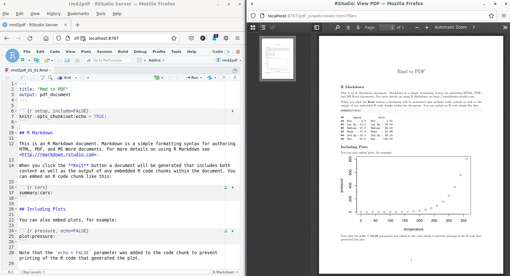
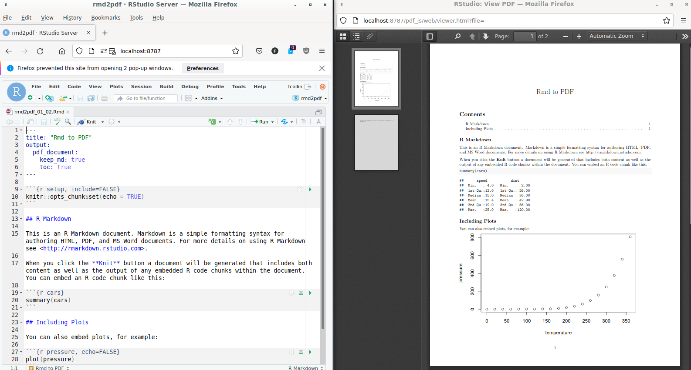
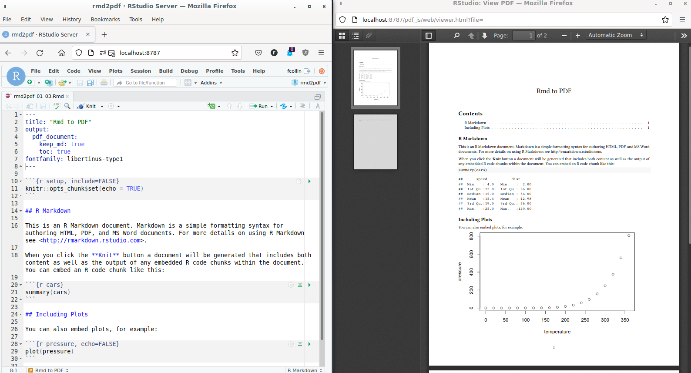
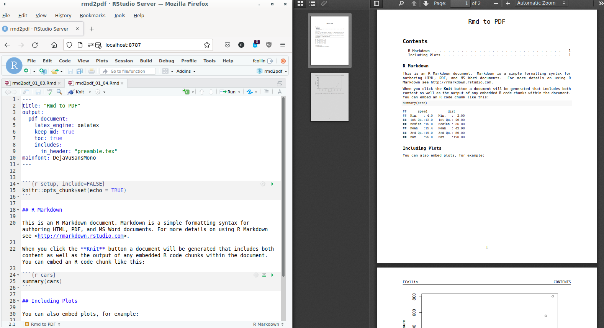

The RStudio environment includes templates of R Markdown documents proposing at selection step to chose PDF output format. It is then easy to render the document, actually simple as a click.
How to start a PDF in RStudio: (1) File > New File > RMarkdown … > Select output PDF and OK; (2) click the knit button at the top of the source pane. 
If starting is easy, the click (bait) is hiding complexity as the question of PDF output configuration is more challenging (e.g. add a footnote, change font):
The aim of the present page is to provide an overview of the tools involved in the pipeline when triggering the rendering of the PDF document, and how to how to pass configuration elements to the right underlying tool.
A series of minimum working examples were generated to support the demonstration. The examples were built at the same time as the results below were reported, they are available as a GitHub repository: Rmd to PDF. Diagrams were employed to describe the sequence of tools involved in the transformation of the R Markdown document to PDF, they were made possible by the Mermaid framework.
The environment for the examples was containerized, a docker image and its definition was used to ensure reproducibility and / or enable the extension of the work (Nüst et al. 2020). The Docker definition was made publicly available at https://github.com/FCACollin/ayup_dock. Note that the image was not originally intended for this specific usage, this explains why it also includes some R packages and LaTeX dependencies not strictly necessary for the examples. However, the image as currently defined was also configured for a research task where pdf reporting was a requirement. Therefore, it was decided to base the example on this image as it shows also how it can be used in production for real-life work.
The image includes:
In terms of pdf reporting, this image can:
render()/pdf_document()Producing a pdf document from a R Markdown (rmd) input is managed by R, but also
involves Pandoc: R pre-process all the R Markdown code
chunks and in-line code converting there result in markdown and generating an
intermediary markdown file (md), Pandoc handles the conversion of the md file
into a pdf document.
The rmarkdown’s functions render() and pdf_document() are high R
level functions which manages most of the features a user might need when
generating a report. The options managed by pdf_document() are directly
assigned to the right tool to be interpreted simplifying the interaction
with the toolchain. For instance, it accepts argument toc resulting in
a Table of Content being added to the output, it also accepts keep_md
which enables the inspection of the intermediary markdown file.
The options are passed either via the yaml frontmatter
(e.g. rmd2pdf_01_03.Rmd) …
---
title: "Rmd to PDF"
output:
pdf_document:
keep_md: true
toc: true
---
… Or via an output function. Comparing both syntaxes, the first line in the
yaml front matters below “output” corresponds to the function used by R for
configuring the output, (pdf_document) followed by options which find a
match in the R function.
library(rmarkdown)
render(
input = "rmd2pdf_01_02.Rmd",
output_format = pdf_document(toc = TRUE, keep_md = TRUE)
)
render and pdf_document are functions exported by the rmarkdown package.
Check
?rmarkdown::pdf_document ’s help.

R’s function for rendering a pdf document is a high level function. It includes
arguments which let the user handle some features of interest for a report, but
it is not possible that R’s function accounts for all possibilities offered
by the downstream tool Pandoc. This is explained by at list two reasons: Pandoc
is highly configurable and proposes a very large number of configuration
options, Pandoc is an evolving framework, new features are still to be expected
in the future.
For Pandoc, configuration of an output is handled by
variables for LaTeX .
In the example above, the option TOC is conveyed to Pandoc directly.
In complement, for the variables which are not directly handled by R’s
function (e.g. the font family), the R argument pandoc_args leaves the door
opened for more Pandoc variables for LaTeX (e.g. variable fontfamily).
The Pandoc variables for LaTeX can be conveyed via:
either the R Markdown document yaml front matter …
---
title: "Rmd to PDF"
output:
pdf_document:
keep_md: true
toc: true
fontfamily: libertinus-type1
---
… Or the pdf_document() function. Extra lines in the yaml front matter
correspond to new pandoc_args list items as built below:
rmarkdown::render(
input = "rmd2pdf_01_03.Rmd",
output_format = rmarkdown::pdf_document(
toc = TRUE,
pandoc_args = list(
"--variable=fontfamily:libertinus-type1"
)
)
)

For the same reason which explain why R Markdown can not account for all possibilities offered by Pandoc, Pandoc being a high level function for LaTeX can not account for all possibilities offered by a LaTeX engine. Many expected functionalities are translated via Pandoc, for those which are not, R’s function open the door via the extra dependency argument.
include/in_header points at a supplementary .tex file:
---
title: "Rmd to PDF"
output:
pdf_document:
latex_engine: xelatex
keep_md: true
toc: true
includes:
in_header: "preamble.tex"
mainfont: DejaVuSansMono
---
preambule.tex:\usepackage{fancyhdr}
\pagestyle{fancy}
\fancyhead[L]{FCollin}
pdf_document() is an interesting alternative, maybe more
compact:
rmarkdown::render(
input = "rmd2pdf_01_04.Rmd",
output_format = rmarkdown::pdf_document(
toc = TRUE,
latex_engine = "xelatex",
pandoc_args = list("--variable=mainfont:DejaVuSansMono"),
extra_dependencies = list(
rmarkdown::latex_dependency(
"fancyhdr",
extra_lines = paste(
"\\pagestyle{fancy}",
"\\fancyhead[L]{FCollin}"
)
)
)
)
)

It was evidenced that the original raw pdf as generated by a simple click in RStudio, hides complexity. Entering the detail of this complexity and decomposing the pipeline brings a better understanding of the possible levels of configuration which can be addressed either through the R functions, the Pandoc interface or the LaTeX engine. The configuration of the output is also complex and may take advantage of a knowledge of the Pandoc command line interface, a better understanding of the YAML format for configuration, and a basic knowledge of LaTeX may also help in achieving a very well designed report. This complexity allows an incredible flexibility in the configuration of the reporting.
However, the complexity can also be seen as hurdle: the increase number of programming languages decrease the likelihood of finding contributors who can leverage the whole potential of pdf reporting with R Markdown. To alleviate this difficulty it is also possible to use templates: in other word, the configuration of a pdf output is a one-off, it is a deliverable itself which can be injected in many reporting task (think about it as a corporate Microsoft word template).
The pdf reporting as presented above, is an illustration of the mechanisms involved to convert a R Markdown file into a document. The same applies to render docx, html or other: the markdown file being at the cross road and Pandoc involved to the final conversion. As for the pdf documents, all output can take advantage of templates, and markup languages (e.g. LaTeX or html) accepts headers or other additional configuration files.
Nüst, Daniel, Vanessa Sochat, Ben Marwick, Stephen J Eglen, Tim Head, Tony Hirst, and Benjamin D Evans. 2020. “Ten Simple Rules for Writing Dockerfiles for Reproducible Data Science.” Public Library of Science San Francisco, CA USA. https://doi.org/10.1371/journal.pcbi.1008316.